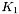

tabprm Struct Reference
Tabular transformation parameters. More...
#include <tab.h>
Data Fields | |
| int | flag |
| int | M |
| int * | K |
| int * | map |
| double * | crval |
| double ** | index |
| double * | coord |
| int | nc |
| int | padding |
| int * | sense |
| int * | p0 |
| double * | delta |
| double * | extrema |
| int | m_flag |
| int | m_M |
| int | m_N |
| int | set_M |
| int * | m_K |
| int * | m_map |
| double * | m_crval |
| double ** | m_index |
| double ** | m_indxs |
| double * | m_coord |
Detailed Description
The tabprm struct contains information required to transform tabular coordinates. It consists of certain members that must be set by the user (given) and others that are set by the WCSLIB routines (returned). Some of the latter are supplied for informational purposes while others are for internal use only.Field Documentation
| int tabprm::flag |
(Given and returned) This flag must be set to zero whenever any of the following tabprm structure members are set or changed:
- tabprm::M (q.v., not normally set by the user),
- tabprm::K (q.v., not normally set by the user),
- tabprm::map,
- tabprm::crval,
- tabprm::index,
- tabprm::coord.
This signals the initialization routine, tabset(), to recompute the returned members of the tabprm struct. tabset() will reset flag to indicate that this has been done.
PLEASE NOTE: flag should be set to -1 when tabini() is called for the first time for a particular tabprm struct in order to initialize memory management. It must ONLY be used on the first initialization otherwise memory leaks may result.
| int tabprm::M |
| int * tabprm::K |
(Given or returned) Pointer to the first element of a vector of length tabprm::M whose elements  record the lengths of the axes of the coordinate array and of each indexing vector.
record the lengths of the axes of the coordinate array and of each indexing vector.
If tabini() is used to initialize the linprm struct (as would normally be the case) then it will set K from the array passed to it as a function argument. The user should not subsequently modify it.
| int * tabprm::map |
(Given) Pointer to the first element of a vector of length tabprm::M that defines the association between axis m in the M-dimensional coordinate array (1  m M) and the indices of the intermediate world coordinate and world coordinate arrays, x[] and world[], in the argument lists for tabx2s() and tabs2x().
m M) and the indices of the intermediate world coordinate and world coordinate arrays, x[] and world[], in the argument lists for tabx2s() and tabs2x().
When x[] and world[] contain the full complement of coordinate elements in image-order, as will usually be the case, then map[m-1] == i-1 for axis i in the N-dimensional image (1 i N). In terms of the FITS keywords
map[PVi_3a - 1] == i - 1.
However, a different association may result if x[], for example, only contains a (relevant) subset of intermediate world coordinate elements. For example, if M == 1 for an image with N > 1, it is possible to fill x[] with the relevant coordinate element with nelem set to 1. In this case map[0] = 0 regardless of the value of i.
| double * tabprm::crval |
(Given) Pointer to the first element of a vector of length tabprm::M whose elements contain the index value for the reference pixel for each of the tabular coordinate axes.
| double ** tabprm::index |
| double * tabprm::coord |
| int tabprm::nc |
(Returned) Total number of coordinate vectors in the coordinate array being the product (see tabprm::K).
(see tabprm::K).
| int tabprm::padding |
(An unused variable inserted for alignment purposes only.)
| int * tabprm::sense |
(Returned) Pointer to the first element of a vector of length tabprm::M whose elements indicate whether the corresponding indexing vector is monotonic increasing (+1), or decreasing (-1).
| int * tabprm::p0 |
(Returned) Pointer to the first element of a vector of length tabprm::M of interpolated indices into the coordinate array such that  , as defined in Paper III, is equal to (p0[m] + 1) + tabprm::delta[m].
, as defined in Paper III, is equal to (p0[m] + 1) + tabprm::delta[m].
| double * tabprm::delta |
(Returned) Pointer to the first element of a vector of length tabprm::M of interpolated indices into the coordinate array such that , as defined in Paper III, is equal to (tabprm::p0[m] + 1) + delta[m].
| double * tabprm::extrema |
(Returned) Pointer to the first element of an array that records the minimum and maximum value of each element of the coordinate vector in each row of the coordinate array, treated as though it were defined as
double extrema[K_M]...[K_2][2][M]
(see tabprm::K). The minimum is recorded in the first element of the compressed  dimension, then the maximum. This array is used by the inverse table lookup function, tabs2x(), to speed up table searches.
| int tabprm::m_flag |
(For internal use only.)
| int tabprm::m_M |
(For internal use only.)
| int tabprm::m_N |
(For internal use only.)
| int tabprm::set_M |
(For internal use only.)
| int tabprm::m_K |
(For internal use only.)
| int tabprm::m_map |
(For internal use only.)
| int tabprm::m_crval |
(For internal use only.)
| int tabprm::m_index |
(For internal use only.)
| int tabprm::m_indxs |
(For internal use only.)
| int tabprm::m_coord |
(For internal use only.)